Un grupo solo tiene valor cuando se le puede poner nombre. Este bloque convierte las etiquetas "grupo 1, grupo 2" en descripciones: qué variables están por encima o por debajo de la media en cada grupo, qué categorías y qué especies lo caracterizan, qué reglas sencillas lo reconocen y cómo asignar a los grupos objetos que no participaron en el análisis.
El Bloque 7 tiene una tarjeta de teoría y cuatro tarjetas de trabajo. En 1 · Profile the clusters eliges la partición y las variables. 2 · What characterises each cluster describe cada grupo con casillas, fichas escritas, tablas y figuras. 3 · Discriminant analysis and classification rules ajusta un análisis discriminante lineal y un árbol de clasificación que reproducen los grupos. 4 · Assign new observations usa esas reglas para clasificar objetos nuevos. Las tarjetas 2 a 4 aparecen al pulsar Profile →; ese mismo botón habilita el Bloque 8.
| Herramienta | Pregunta | Resultado |
|---|---|---|
| Valor de prueba v, ANOVA y Kruskal–Wallis | ¿Qué variables distinguen cada grupo? | Medias por grupo con su v; F, η² y valores P por variable. |
| Proporciones y χ² | ¿Qué categorías abundan en cada grupo? | Categorías sobre y subrepresentadas; V de Cramér. |
| Valor indicador (IndVal) | ¿Qué especies indican cada grupo? | Especificidad, fidelidad y prueba de permutación. |
| Análisis discriminante lineal | ¿Qué combinación de variables separa los grupos? | Ejes discriminantes, pesos, exactitud y mapa. |
| Árbol de clasificación | ¿Qué reglas simples reconocen cada grupo? | Reglas del tipo "Grupo 3 si DaysToFlower ≤ 73". |
| Asignación de objetos nuevos | ¿A qué grupo pertenece un objeto nuevo? | Tres asignaciones y su acuerdo. |
Describir un grupo es decir en qué se aparta del conjunto. Como la función catdes de FactoMineR, la app compara la media de cada grupo con la general mediante un valor de prueba.
| Columna del Bloque 1 | Aparece como |
|---|---|
| Activa cuantitativa, de conteo, binaria u ordinal | Variable cuantitativa, con sus valores originales (no los transformados del Bloque 2). |
| Activa nominal | Variable categórica. |
| Suplementaria | Cuantitativa o categórica según su tipo, marcada supplementary; los faltantes se sustituyen por la media o forman la categoría (missing). |
| Etiqueta, grupos conocidos o excluida | No aparece. |
La casilla de especies indicadoras aparece cuando hay al menos dos variables de conteo o binarias, y viene marcada si el Bloque 2 reconoció una tabla ecológica o binaria. Con DBSCAN, el ruido se describe como un grupo más, el último.
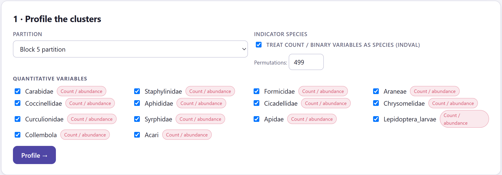
1 2 3 4Si un grupo de nk objetos se sacara al azar de los N, su media variaría alrededor de la media general con una varianza s²/nk · (N − nk)/(N − 1), donde s² es la varianza de la variable con denominador N. El valor de prueba es la diferencia entre la media del grupo y la general dividida entre esa desviación típica: v = (x̄k − x̄)/√[s²/nk · (N − nk)/(N − 1)]. Se lee como un valor z: |v| ≥ 1.96 señala una variable que caracteriza al grupo, por arriba si v > 0 y por abajo si v < 0. Para cada variable, además, un ANOVA de una vía dice si separa los grupos en conjunto, con η² (proporción de la variación explicada) como tamaño del efecto, y la prueba de Kruskal–Wallis da la misma respuesta con rangos.
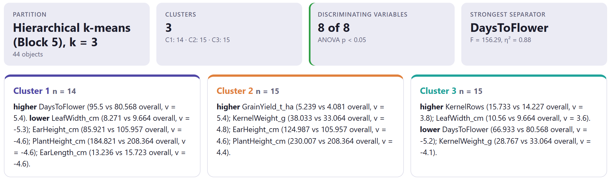
| Casilla | Qué muestra |
|---|---|
| Partition | La partición descrita y el número de objetos. |
| Clusters | El número de grupos y sus tamaños. |
| Discriminating variables | Cuántas variables cuantitativas tienen ANOVA con p < 0.05; en ámbar si ninguna. |
| Strongest separator | La variable de mayor F, con su η². |
| Associated categorical variables | Cuántas categóricas tienen χ² con p < 0.05 (sección 8.2). |
| Indicator species | Cuántas especies son indicadoras con p < 0.05 (sección 8.3). |
Las fichas traducen la tabla a frases. Con el maíz, el grupo 1 (14 accesiones del altiplano) florece tarde, 95.5 días frente a 80.6 (v = 5.4), y tiene hojas más angostas, mazorcas más bajas, plantas más bajas y mazorcas más cortas. El grupo 2 (15 de los valles) rinde más, 5.24 t/ha frente a 4.08 (v = 5.4), con granos más pesados y plantas y mazorcas más altas. El grupo 3 (15 de la costa) tiene más hileras y hojas más anchas, y florece antes: 66.9 días (v = −5.2). Una ficha sin ninguna variable significativa dice que se trata de un grupo "promedio" o pequeño.
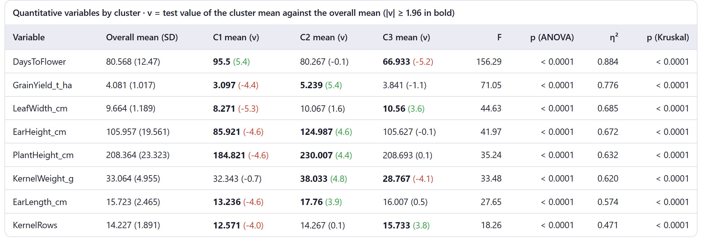
Los grupos se construyeron precisamente para que difieran en las variables activas, así que esas variables siempre saldrán "significativas". Con el ruido uniforme de la práctica 7, que no tiene grupos, cuatro de las cinco variables tienen ANOVA con p < 0.05. Usa v, F y η² para ordenar y describir, no como prueba de que los grupos existen: eso lo dice el Bloque 6. Solo las variables suplementarias, que no intervinieron en el agrupamiento, permiten afirmaciones inferenciales, como "los grupos difieren en altitud" cuando la altitud no se usó para formarlos.
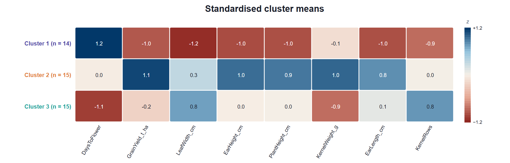
Las variables nominales se describen con proporciones. Para cada categoría y cada grupo, la app compara la proporción de la categoría dentro del grupo con su proporción en todos los datos, con un valor de prueba construido igual que el de las medias.
Si una categoría ocupa la proporción p de los N objetos y el grupo tiene nk, la proporción dentro del grupo tendría, al azar, una varianza p(1 − p)/nk · (N − nk)/(N − 1). El valor de prueba es la diferencia de proporciones entre su desviación típica, una aproximación normal a la prueba hipergeométrica: v ≥ 1.96 marca una categoría sobrerrepresentada (▲) y v ≤ −1.96 una subrepresentada (▼). Para la variable completa, la prueba de χ² de la tabla grupos × categorías dice si hay asociación, y la V de Cramér (de 0 a 1) cuánta.
Cada variable categórica tiene su propia tabla: una fila por categoría y una columna por grupo con el conteo y el porcentaje del grupo, las marcas ▲ y ▼, y el χ² con la V de Cramér en el título. Las fichas de los grupos añaden las categorías sobrerrepresentadas que aparecen al menos dos veces, con el porcentaje en el grupo frente al general. Con los perfiles de suelo en tres grupos (práctica 4), la textura tiene χ² = 72 con 10 grados de libertad y V = 1.00: cada textura cae en un solo grupo.
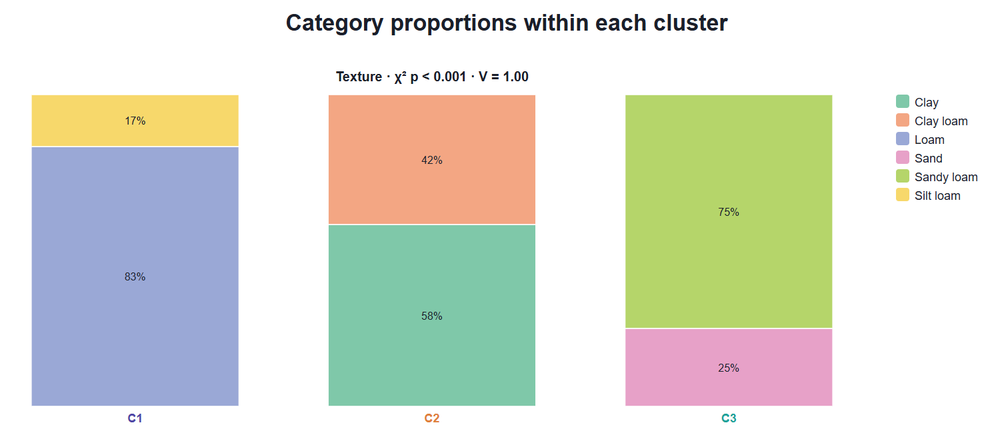
En ecología de comunidades, la pregunta natural no es qué media es alta sino qué especie indica cada grupo: una especie que vive casi solo en ese grupo y está en casi todos sus sitios. El valor indicador de Dufrêne y Legendre, IndVal, mide exactamente eso.
Para una especie y un grupo, la especificidad A es la parte de la abundancia media de la especie que corresponde a ese grupo: la media en el grupo dividida entre la suma de sus medias en todos los grupos. La fidelidad B es la proporción de sitios del grupo donde la especie aparece. IndVal = A × B, de 0 a 100 %. Cada especie se asigna al grupo donde su IndVal es máximo. La significancia se obtiene permutando las etiquetas de los grupos: el valor P es la proporción de permutaciones (más la observada) en que el IndVal máximo iguala o supera al observado. Con 499 permutaciones el valor P más pequeño posible es 0.002.
| Patrón | Lectura |
|---|---|
| A alto, B alto | Indicadora ideal: exclusiva y constante (Sagittaria, 100 × 90). |
| A alto, B bajo | Exclusiva pero rara: su presencia delata el grupo, su ausencia no dice nada (Nymphaea, 100 × 70). |
| A bajo, B alto | Constante pero compartida: frecuente en el grupo y también fuera (Salix, 71 × 100). |
| IndVal > 50 % y p < 0.05 | Buena indicadora para describir o reconocer el grupo en campo. |
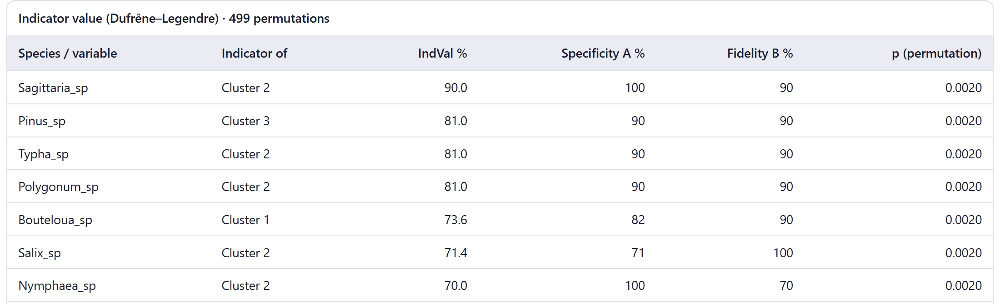
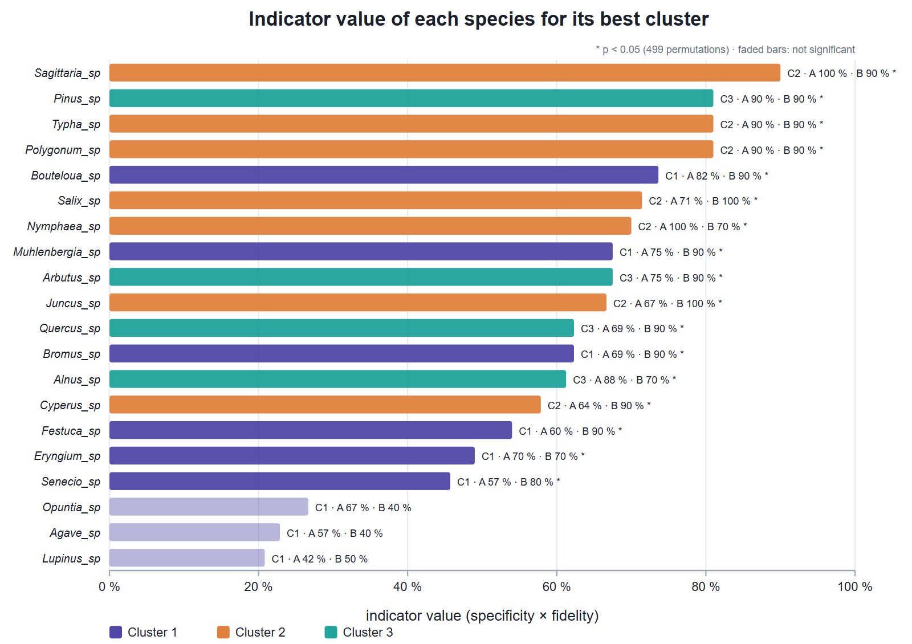
La fidelidad cuenta presencias. En una tabla de abundancias donde casi todas las especies aparecen en todos los sitios, como la de insectos, B vale 100 % para todas y el IndVal se reduce a la especificidad: una familia es indicadora porque se concentra en un grupo, no porque falte en los demás. Con presencia y ausencia las dos partes cuentan.
Los valores de prueba miran una variable a la vez. El análisis discriminante lineal (LDA) busca la combinación de variables que mejor separa los grupos, y con ella una regla para clasificar cualquier objeto. La tarjeta 3 aparece cuando hay al menos una variable cuantitativa marcada.
El LDA calcula la matriz de covarianza dentro de los grupos, W, y la matriz entre grupos, B, y busca los ejes que maximizan la varianza entre grupos relativa a la de dentro: los vectores propios de W⁻¹B. Hay a lo sumo k − 1 ejes (LD1, LD2…), y el porcentaje de cada uno dice qué parte de la separación explica. La lambda de Wilks, Λ = ∏ 1/(1 + λi), va de 0 (separación total) a 1 (ninguna) y se prueba con la χ² de Bartlett. Para clasificar, cada objeto recibe la probabilidad posterior de pertenecer a cada grupo, suponiendo grupos normales con covarianza común; las probabilidades previas son proporcionales a los tamaños o iguales. Si W es casi singular, la app le suma una pequeña cresta (10⁻⁴ de su traza media).
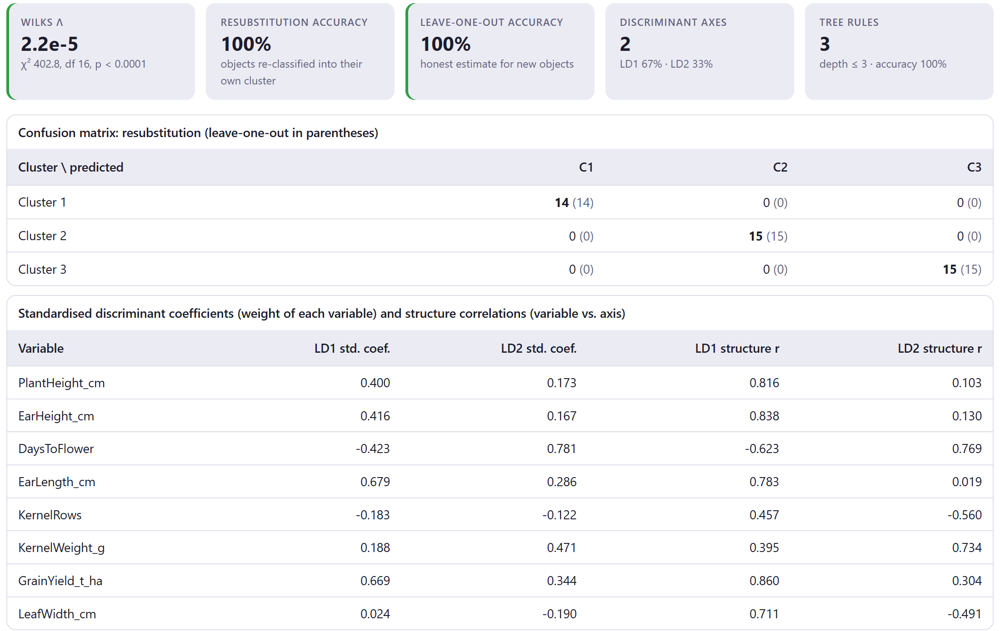
| Elemento | Qué es |
|---|---|
| Wilks Λ | La lambda con su χ², grados de libertad y valor P; en verde si p < 0.05. Los valores muy pequeños se escriben en notación científica. |
| Resubstitution accuracy | Proporción de objetos que la regla devuelve a su propio grupo usando todos los datos. Siempre optimista. |
| Leave-one-out accuracy | Cada objeto se clasifica con una regla ajustada sin él: la estimación honesta para objetos nuevos. Verde > 90 %, ámbar > 70 %. Se calcula hasta 600 objetos. |
| Discriminant axes | Número de ejes y porcentaje de cada uno. |
| Tree rules | Reglas del árbol, profundidad y acierto (sección 8.5). |
| Coeficientes estandarizados | El peso de cada variable en cada eje, en unidades de desviación estándar dentro de grupos. Dicen qué variables usa la regla, pero se reparten entre variables correlacionadas. |
| Correlaciones de estructura | La correlación de cada variable con cada eje. Dicen qué significa el eje y son más estables que los coeficientes. |
Con el maíz, LD1 correlaciona sobre todo con el rendimiento (r = 0.86), la altura de mazorca (0.84) y la de planta (0.82): es un eje de vigor que separa los valles del altiplano. LD2 correlaciona con los días a floración (0.77) y el peso de grano (0.73), y en sentido contrario con las hileras (−0.56): separa la costa, precoz y de muchas hileras, de los otros dos.
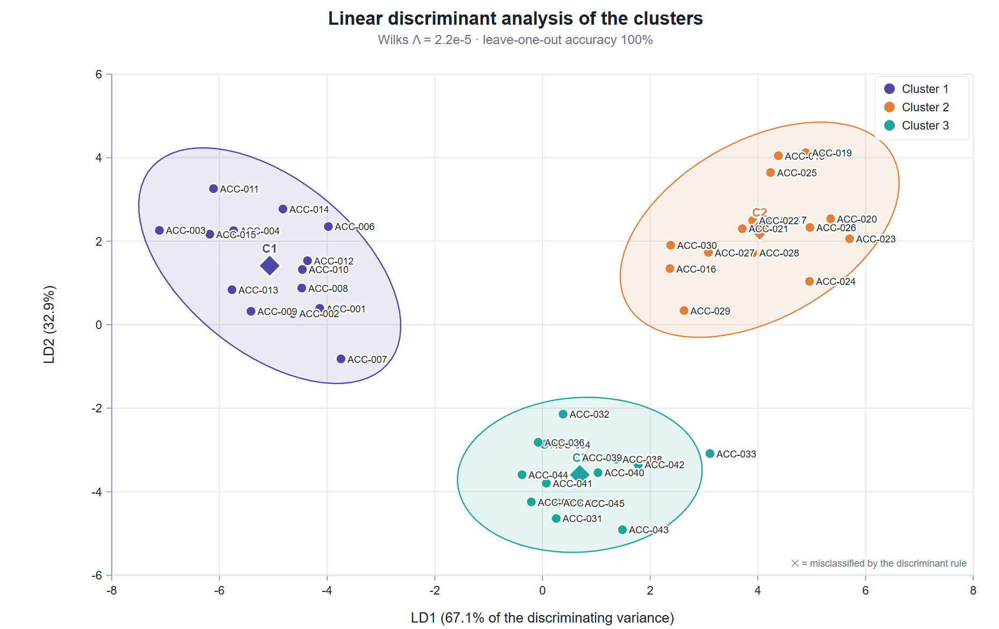
La regla discriminante tiene tantos parámetros como variables por grupo, y con muchas variables se aprende de memoria los objetos de entrenamiento. Dos avisos lo vigilan: Few objects for … variables, cuando hay menos objetos que variables más grupos, y Resubstitution accuracy … is much higher than leave-one-out, cuando la diferencia supera 15 puntos. Con la presencia de especies (22 variables, 30 sitios) la resustitución es perfecta, pero dejando uno fuera acierta solo el 53 % (práctica 2). Antes de clasificar objetos nuevos, desmarca en la tarjeta 1 las variables que no discriminan y vuelve a pulsar Profile →.
Un árbol de clasificación resume los grupos en preguntas de sí o no sobre una variable a la vez. Pierde algo de exactitud frente al LDA, pero se explica en una frase y se aplica en campo sin calculadora.
El árbol empieza con todos los objetos y prueba cada variable y cada punto de corte (el punto medio entre dos valores observados consecutivos). Elige el corte que más reduce la impureza de Gini, 1 − Σ pc², donde pc es la proporción de cada grupo en el nodo. Repite el proceso en cada rama hasta que el nodo es puro, alcanza la profundidad máxima, tiene menos del doble del mínimo de objetos por hoja o ningún corte mejora la impureza. Cada hoja predice su grupo mayoritario, y cada camino de la raíz a una hoja es una regla.
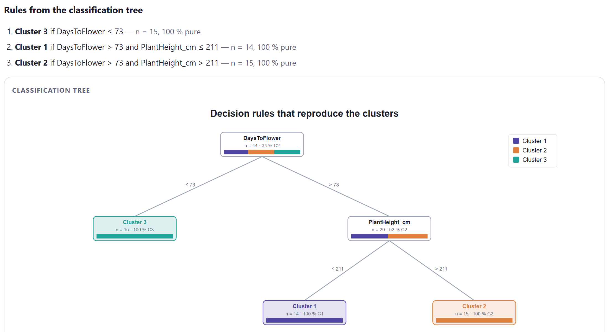
| Control | Qué hace |
|---|---|
| Prior probabilities | Proportional to cluster sizes (por omisión) o Equal. Con grupos de tamaños muy distintos, las previas iguales evitan que la regla favorezca al grupo grande. |
| Tree depth | De 1 a 6 niveles; 3 por omisión. Más profundidad, más reglas y más riesgo de ajustar el ruido. |
| Minimum objects per leaf | De 1 a 50; 3 por omisión. Evita reglas que describen uno o dos objetos. |
| Recompute | Vuelve a ajustar el LDA y el árbol con los controles nuevos, sin repetir los perfiles. |
Una tipología sirve de verdad cuando permite clasificar lo que venga después: una accesión nueva, un sitio muestreado el año siguiente, un suelo de otra parcela. La tarjeta 4 asigna objetos nuevos con tres reglas a la vez, y su acuerdo dice cuánto confiar en la asignación.
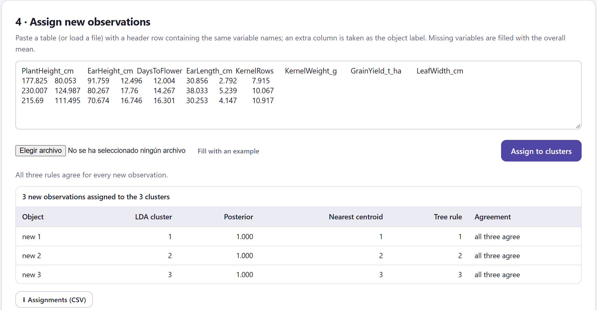
| Elemento | Detalle |
|---|---|
| LDA cluster · Posterior | El grupo de mayor probabilidad posterior en el análisis discriminante, y esa probabilidad. |
| Nearest centroid | El grupo cuyo centroide está más cerca, tras estandarizar con la media y la desviación de los datos originales. |
| Tree rule | El grupo de la hoja a la que llega el objeto en el árbol. |
| Agreement | all three agree o methods differ. Un desacuerdo señala un objeto entre grupos; la probabilidad posterior dice cuán dudoso es. |
| La tabla | Pégala o cárgala con Elegir archivo (CSV, TSV o texto). La primera fila debe tener los nombres de las variables, sin importar mayúsculas; una columna con otro nombre se toma como etiqueta. Las variables que falten se rellenan con la media general, con un aviso. |
| ⬇ Assignments (CSV) | Guarda por objeto las tres asignaciones, la probabilidad y los valores usados. |
Asignar no es volver a agrupar: los centroides, la regla discriminante y el árbol quedan fijos. Un objeto muy distinto de todos se asignará igualmente al grupo menos lejano, con posterior alta si está lejos en la dirección de ese grupo. Si esperas objetos de un tipo que no estaba en los datos, compara sus valores con los perfiles de la tarjeta 2 y, si hace falta, repite el análisis con ellos incluidos.
El bloque produce hasta ocho figuras, todas editables y exportables con el estudio de figuras (capítulo 2). Las cuatro primeras aparecen con variables cuantitativas; la de categorías, con categóricas; la de especies, con IndVal; las dos últimas, con la tarjeta 3.
| Figura | Qué muestra | Controles propios |
|---|---|---|
| Cluster profiles as a heat map | Medias por grupo y variable (figura 8.4). | Cell value (z, valor de prueba v o media escalada por variable), Colour map, mostrar valores, todas las variables o las 30 más discriminantes. |
| Radar of cluster means | Un polígono por grupo con las medias escaladas de 0 a 1 (figura 8.12). | Número de variables (las más discriminantes), escala por el rango de las medias o de los datos, opacidad del relleno, grosor de línea, tamaño de etiquetas, leyenda. |
| Parallel coordinates | Las medias en z unidas por líneas, con los objetos en trazo tenue (figura 8.13). | Número de variables, dibujar los objetos (por omisión hasta 200), grosor de línea. |
| Distribution of each variable by cluster | Diagramas de caja por grupo, las variables más discriminantes primero (figura 8.14). | Número de variables (hasta 24). |
| Composition of the categorical variables | Barras apiladas por grupo (figura 8.5). | Número de variables, paleta de categorías. |
| Indicator species | IndVal por especie (figura 8.7). | Número de especies, nombres en cursiva. |
| Discriminant map | Objetos en LD1 y LD2 (figura 8.9). | Elipses del 95 %, etiquetas (automáticas hasta 60), tamaño de etiquetas y de puntos, leyenda. |
| Classification tree | El árbol con la composición de cada nodo (figura 8.10). | Título, paleta y leyenda. |
⬇ Profile table (CSV) guarda, por variable cuantitativa, la media y la desviación generales; por grupo, el tamaño, la media, la desviación y el valor de prueba; y el F, su valor P, η², la H de Kruskal–Wallis y su valor P. El informe del Bloque 8 incluye las fichas de los grupos, las tablas y las figuras tal como las editaste. Si el Bloque 3 recalcula la matriz, los resultados del Bloque 7 se borran y hay que volver a pulsar Profile →.
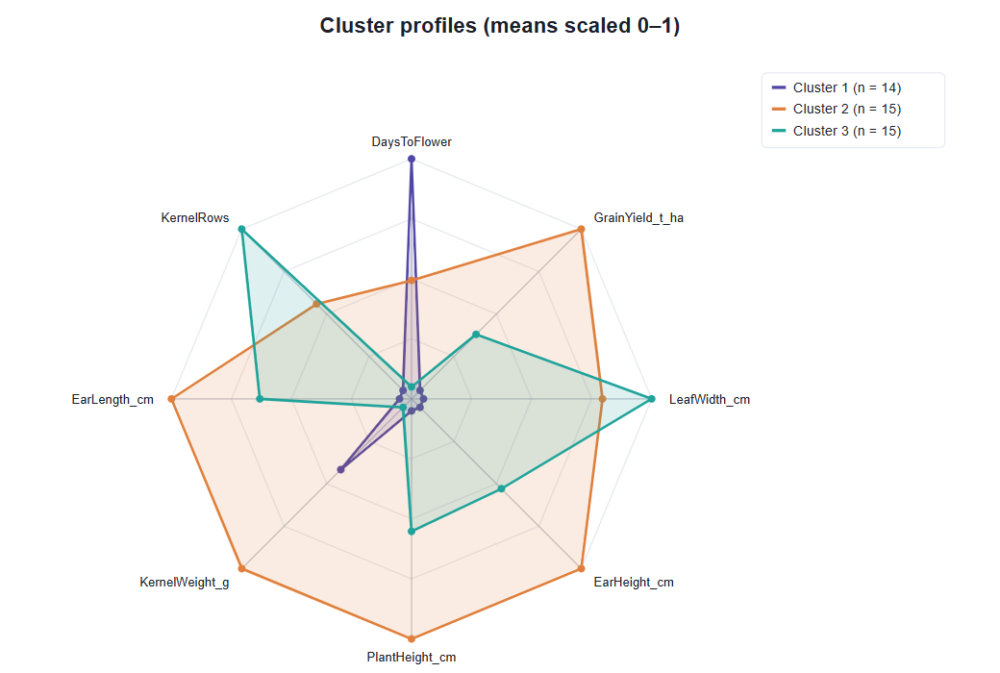
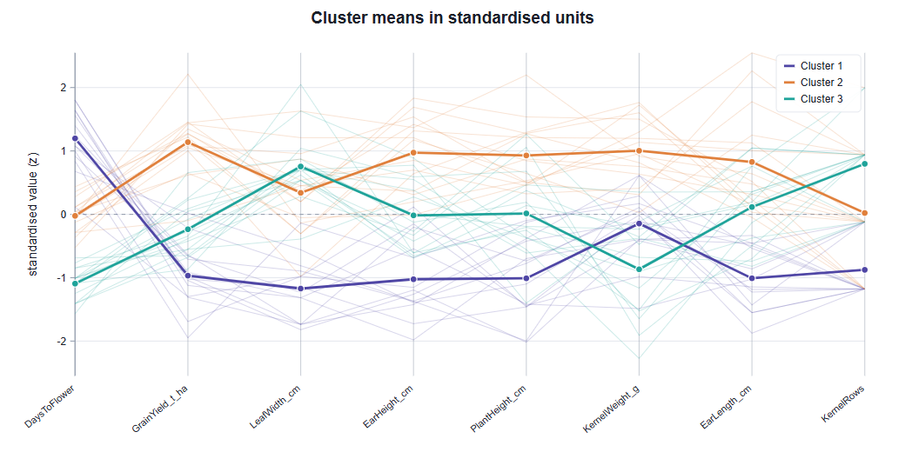
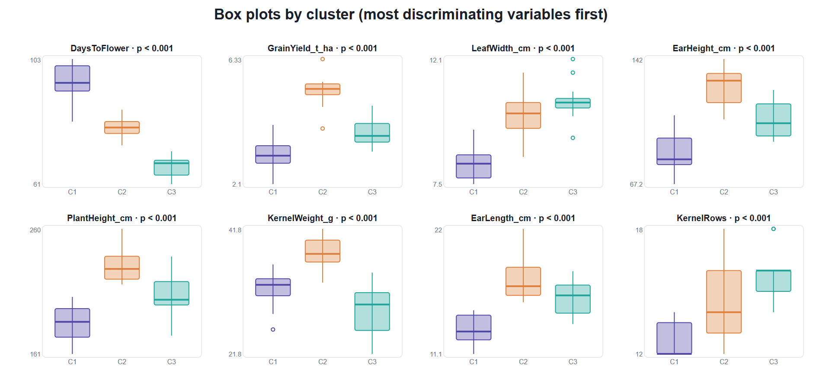
Con cada ejemplo preparado como en los capítulos anteriores (UPGMA en el Bloque 4 para la presencia de especies y los insectos, el método propuesto en el Bloque 5 y el Bloque 6 evaluado), la tabla 8.8 resume lo que dice el Bloque 7 con todas las variables marcadas. Las prácticas se detienen en cada caso.
| Ejemplo | k | Mejor separador | Discriminantes | LDA dejando uno fuera | Árbol |
|---|---|---|---|---|---|
| Razas de maíz | 3 | DaysToFlower (η² 0.88) | 8 de 8 | 100 % | 3 reglas, 100 % |
| Presencia de especies | 3 | Sagittaria (η² 0.86) | 17 de 22 | 53.3 % | 5 reglas, 93 % |
| Abundancia de insectos | 3 | Carabidae (η² 0.77) | 14 de 14 | 100 % | 3 reglas, 100 % |
| Perfiles de suelo | 3 | CEC_cmol_kg (η² 0.96) | 8 de 8 | 100 % | 3 reglas, 100 % |
| Matriz de distancias | 3 | Sin variables: no hay perfiles; el Bloque 8 queda habilitado. | |||
| Cuatro grupos simulados | 4 | V5 (η² 0.94) | 5 de 5 | 100 % | 4 reglas, 100 % |
| Ruido uniforme | 3 | V5 (η² 0.63) | 4 de 5 | 91.7 % | 6 reglas, 95 % |
Los suelos, con los tres grupos adoptados en el Bloque 6 (práctica 4 del capítulo 7). "Discriminantes" cuenta las variables con ANOVA p < 0.05.
Los perfiles convierten números en tipos reconocibles: maíces de altura, tardíos y bajos; de valle, altos y rendidores; de costa, precoces. El árbol muestra que dos mediciones de campo bastan para reconocerlos, y el desacuerdo al alterar un objeto enseña por qué conviene usar las tres reglas: el árbol decide con un solo umbral, el discriminante da mucho peso a la floración y el centroide pesa por igual las ocho variables. Un objeto precoz pero con el resto de rasgos del altiplano queda, con razón, marcado como dudoso.
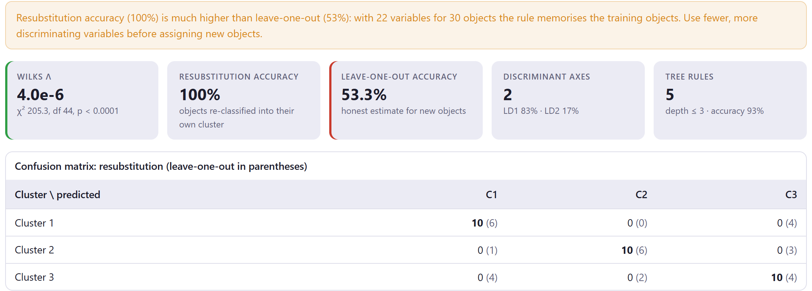
Con comunidades, las especies indicadoras son la mejor descripción: dicen qué buscar en campo para reconocer cada hábitat. La regla discriminante con todas las especies, en cambio, es un espejismo: con más parámetros que información se ajusta a los 30 sitios y falla con cualquiera nuevo. La exactitud dejando uno fuera es la única que importa para predecir, y la de resustitución solo sirve para compararla.
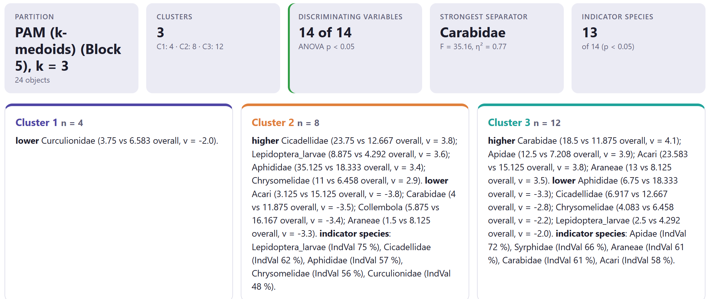
Un grupo sin rasgos propios es un grupo intermedio: sus objetos están entre los extremos y no tienen nada que los caracterice por sí mismos. Es la misma señal que dieron el Bloque 5 (campos orgánicos repartidos) y el Bloque 6 (su grupo, dudoso por bootstrap). Coherentes entre sí, las tres evidencias apoyan describir un gradiente de manejo más que tres tipos nítidos.
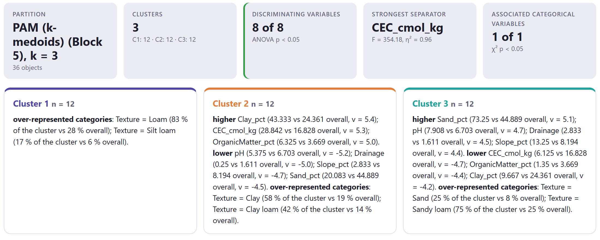
Un grupo intermedio en todas las variables numéricas puede ser un tipo perfectamente real: aquí son los suelos francos, estables en el Bloque 6 con Jaccard 1.000. Lo que lo define es una variable categórica. Por eso conviene perfilar con todas las variables disponibles, también las suplementarias, y no solo con las que tienen medias extremas.
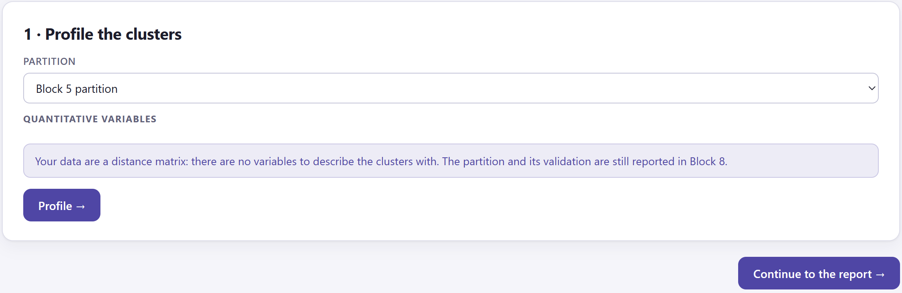
Una matriz de distancias permite agrupar y validar, pero no describir: para decir en qué difieren los grupos hacen falta las variables. Si tienes datos de los objetos (origen, año, rasgos morfológicos), cárgalos como tabla con la matriz aparte, o bien úsalos fuera de la app para interpretar los grupos obtenidos.
Los grupos reales suelen distinguirse por combinaciones, no por una variable. Por eso la ficha enumera varias, el LDA necesita tres ejes y el árbol usa la misma variable en dos niveles. Si el Bloque 6 dijo que la estructura es fuerte, el Bloque 7 debe poder describirla con claridad; si no puede, revisa las variables elegidas.
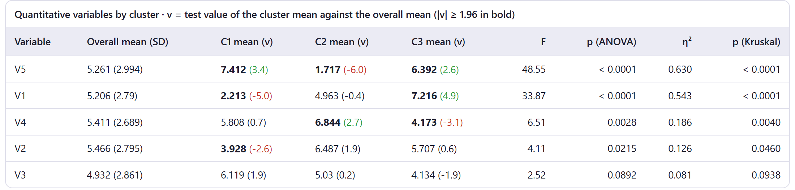
Es la advertencia de la sección 8.1 hecha realidad. Cualquier partición, incluso de datos sin estructura, produce perfiles convincentes, variables significativas y reglas que se reconocen a sí mismas con alta exactitud. Solo el Bloque 6 (silueta baja, gap en k = 1, grupos inestables) revela que no hay grupos. Nunca interpretes el Bloque 7 sin haber mirado antes el Bloque 6.
En la sección de métodos: que los grupos se describieron con valores de prueba (catdes), ANOVA y Kruskal–Wallis; que los valores P de las variables activas son descriptivos; el número de permutaciones del IndVal, si lo usaste; y, para el discriminante, las probabilidades previas y la validación dejando uno fuera. En resultados: una descripción de cada grupo con sus variables y categorías principales, las especies indicadoras con su IndVal y valor P, y la exactitud dejando uno fuera. Por ejemplo: "El grupo 1 (n = 14) se caracterizó por una floración más tardía (95.5 frente a 80.6 días; v = 5.4) y plantas más bajas; un análisis discriminante clasificó correctamente el 100 % de las accesiones en validación dejando una fuera". El párrafo del Bloque 8 lo redacta con tus valores.
Con los grupos descritos, solo falta reunirlo todo. El siguiente capítulo presenta el informe del Bloque 8: qué secciones incluye, cómo elegirlas, los párrafos de métodos y resultados que redacta con tus valores y cómo exportar el informe y las figuras.